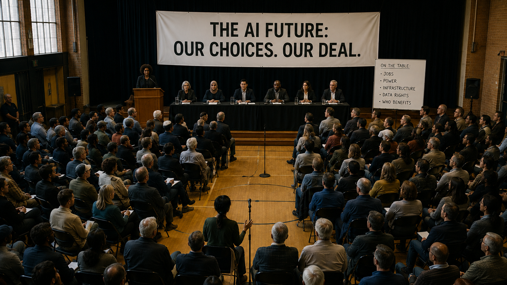

Image captionPublic town hall with panel on stage under the banner "The AI Future: Our Choices. Our Deal.", with citizens debating jobs, power, infrastructure and shared benefits.
Image size: 1600 x 900 article header, 1200 x 630 social cropThe shift
The useful AI debate is moving away from the cartoon version: "everything will be fine" on one side, "everything is doomed" on the other. The sharper argument is about distribution.1 Who gets the leverage? Who gets the bill? Who owns the new layer of productivity?
The technology has enough appeal that pretending it can simply be paused forever feels unserious. People will use tools that make them faster, more capable, more expressive or less alone in front of a blank screen. Companies will use systems that cut time and cost. Governments will not ignore a capability race because the vibes are uncomfortable.
Treating that as the starting point is not surrender. If the change is coming, the public has to argue about the shape of the change while there is still room to shape it.
The appeal of AI gets weaker if the upside feels privately captured and publicly imposed.
The deal
Dario Amodei has been unusually blunt about the scale of the moment, describing AI as entering the "adolescence of technology." That phrase works because adolescence is not innocence. It is power without full judgment yet. Energy, talent, status, bad decisions, promise. The whole difficult mix.
The job-market version of this is already tense. Some tasks will be automated. Some roles will be redesigned. Some people will get enormous leverage from tools they understand. Others will be told to compete with systems trained on a world they helped create.
The public deal should be plain: access, education, worker mobility, provenance, creator rights, useful transparency, and a serious conversation about how AI wealth is taxed or shared. Not as a charity footnote. As infrastructure for legitimacy.
This is where criticism and optimism belong together. The negative parts are real. So are the extraordinary parts. A small team can build more. A disabled person can speak, code, plan or create with less friction. A student can ask better questions. A scientist can search a larger space. A creator can sketch worlds that used to be locked behind budget, software and time.
The Appeal
- The real promise is widening what more people can attempt.
- The risk goes beyond job loss: a narrow ownership model for a broad public technology.
- The best AI story is a capability story and a fairness story at the same time.
What to watch next
Watch less for one dramatic labor-market headline and more for small pressure points: entry-level roles, customer support, coding, design, research assistance, marketing, legal drafting, education.2 The shift may arrive as a hundred workflow edits before it arrives as one giant announcement.
Also watch whether AI companies talk about public upside in specific terms. "This will help everyone" is not enough. Help how? Owned by whom? Verified by what source? Paid for by which bargain?3